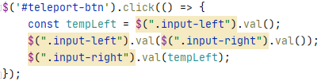

jQuery and start fælles project
jQuery er et hurtigt, lille, mulighedsrigt JavaScript bibliotek.
Bliver hentet ved at bruge et script i HTML filen det skal benyttes:
https://ajax.googleapis.com/ajax/libs/jquery/3.5.1/jquery.min.js

Go to index